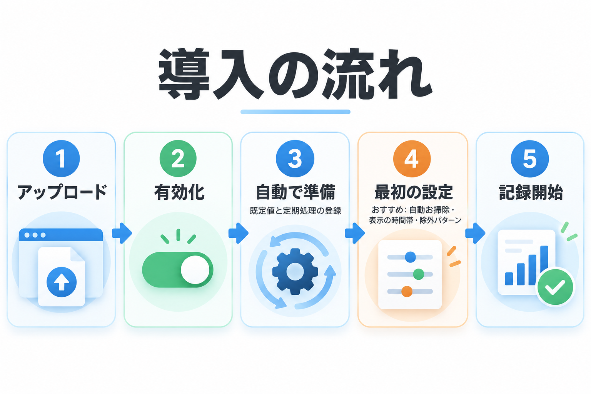

インストール・初期設定
プラグインの導入から、最初にしておきたい設定までを順に説明します。有効化したときに自動で行われることも確認できます。

インストール
プラグインのファイルを用意する
GitHub のリポジトリから ZIP ファイルをダウンロードします。
アップロードする
WordPress 管理画面の「プラグイン」→「新規追加」→「プラグインのアップロード」で ZIP ファイルを選び、「今すぐインストール」を押します。FTP などで wp-content/plugins/ に置いても構いません。
有効化する
「プラグイン」の一覧で「有効化」を押します。有効化した直後から、アクセスの記録が始まります。
管理画面を開く
左メニューに目のアイコンの「Kashiwazaki SEO Access Log」が追加されます。サイトの管理者（設定を変更できる権限を持つユーザー）だけに表示されます。
有効化したときに自動で行われること
| 内容 | 説明 |
|---|---|
| ログを保存する場所を作る | ログを保存する場所をデータベースに用意します（すでにあればそのまま使います）。 |
| 設定の初期値を入れる | まだ設定していない項目に初期値を入れます。すでに設定した値は変えません。 |
| 新しく入れたサイトの自動クリーンアップ | 初めて入れたサイトでは、自動クリーンアップをオン・保存期間 90 日にします。以前のバージョンから使っているサイトは、これまでの設定のままです。 |
| 定期処理の登録 | 毎日の古いログの削除（自動クリーンアップがオンのとき）と、1 時間ごとの見回りを登録します。詳しくは「自動で行われること」。 |
| ボット判定の更新 | ボット検出パターンが以前のバージョンの初期値のままなら、AI のクローラー（GPTBot など）を含む新しい初期値に更新します。自分で書き換えたパターンはそのままです。 |
最初にしておきたい設定
初期値のままでも使えますが、次の 4 つを確かめておくと、あとで数字を読み違えにくくなります。どれも「設定」タブで変更し、ページの上か下の保存ボタンで保存します。
ログの保存期間を決める
「自動クリーンアップを有効化」をオンにして、「ログ保存期間（日数）」を決めます。ログは増え続けるので、期限を決めておくと表示の遅さやデータベースの肥大化を防げます。目安は 30〜180 日です。→ 自動クリーンアップ
記録から外すページを決める
自分や社内からの確認用のページ、監視サービスがアクセスする URL など、数えたくないアクセスがあれば「ログ除外URIパターン」に書きます。→ ログ除外URIパターン
表示の時間帯を選ぶ
メインタブの時刻は、初期状態では世界標準時（UTC）で表示されます。日本のサイトなら、絞り込みの右端で「Tokyo (JST)」を選んでください（URL に残るので、ブックマークしておくと便利です）。→ 表示タイムゾーン
国の判定を決める
国はブラウザの言語設定から推定します。IP アドレスから国を調べたい場合は「IPアドレスから国コードを推定」をオンにします（外部のサービスに IP アドレスを送ります）。→ 国コード取得
まずは初期値で数日記録してから、「アクセス統計チャート」のユーザーエージェントとリファラードメインを見て、記録から外したいアクセスや、ブロックしたい相手がいないかを確かめるのがおすすめです。
以前のバージョンから更新したとき
1.0.1 では、ログの保存形式を軽量にし、表示を大幅に速くしました。更新すると、次のことが自動で行われます。
| 内容 | 説明 |
|---|---|
| 保存形式の移し替え | 以前の形式のログは、裏で少しずつ新しい形式へ移し替えます。ログが約 20 万件より少なければ、管理画面を開いたときに自動で始まります。多い場合は「ログの管理」タブのボタンで始めます。移し替え中も、記録と閲覧はそのまま使えます。→ データベースの軽量化 |
| CSV ファイルの保管場所の移動 | 以前のバージョンがエクスポート・インポートの CSV ファイルを置いていた場所から、外から見られない保管場所へ、ファイルを自動で移します。移せなかった場合は、管理画面の上部に赤いお知らせが出ます。→ 困ったとき |
| 集計の作成 | 合計・グラフを速く表示するための時間ごとの集計を、裏で自動的に作ります。作り終えるまでは、これまでどおりログから直接数えて表示します。 |
移し替えの途中は、ログの削除・CSV のインポート・自動クリーンアップ・疑わしいキーワードの変更ができません。移し替えが終わると、自動で使えるようになります。